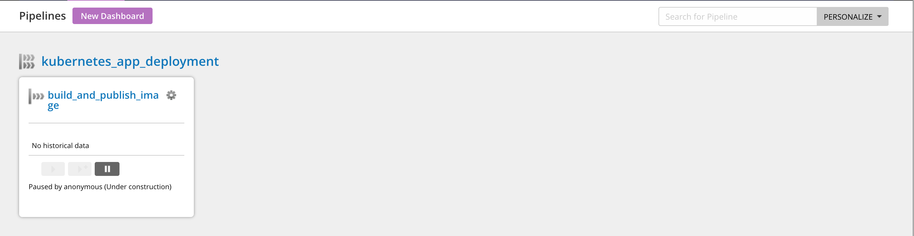

Create a pipeline to build and publish your application image
In this section, we’ll go over how to design CD pipelines that build and publish an application image. As an example, we’ve used a sample nodejs application called ‘Bulletin Board’.
Prerequisites
We’ll be building our application as a docker image artifact and publishing it to Docker Hub. To do this, make sure you have a Docker Hub account.
Quick links
Build an application artifact
Click on the
Pipelineslink on the top menu to create your first pipeline.Specify the pipeline name and the group name as
build_and_publish_imageandkubernetes_app_deploymentrespectively.

- Specify a git material with repository
https://github.com/gocd-demo/node-bulletin-board.git.

- Create a stage called
build_and_publish_image.

- Create a job called
build_and_publish_imagewith an initial task argument
docker build -t $DOCKERHUB_USERNAME/bulletin-board:$GO_PIPELINE_LABEL . -f Dockerfile.applicationThe
GO_PIPELINE_LABELis an environment variable provided by GoCD which can be used to differentiate between builds from a repository.
Here we are using GO_PIPELINE_LABEL to determine the application image tag.
Note: This is the job that we have to associate with the elastic agent profile that we created earlier.
Tip: Do not forget the -c option in the arguments section.

Click on the Finish button when you’re done. This will take you to the pipeline settings page for additional configurations.
- Navigate to Environment Variables tab. Configure the
DOCKERHUB_USERNAMEas an environment variable.

Publish your application image to Docker Hub
Create an artifact store
Navigate to Admin > Artifact Stores to add the global artifact store

Navigate to the pipeline settings for
build_and_publish_image.Tip: Use the tree on the left to navigate to the job
build_and_publish_image. Once you’re here, you can associate the profile ID under the Job Settings tab.Create an external artifact under the
build_and_publish_imagejob.Specify the artifact id as
bulletin-boardSpecify the artifact store id as
dockerhubSpecify the
imageproperty as${DOCKERHUB_USERNAME}/bulletin-boardSpecify the
tagproperty as${GO_PIPELINE_LABEL}This will ensure that the image being built by the
build_and_publish_imagejob is the one being published.
Note: You need to have an artifact store configured for this so that the plugin is aware of the credentials to use when publishing the artifact.

- This is what the
Tasksunder thebuild_and_publish_imagejob should look like once you finish this configuration

Associate job with the elastic profile
Quick links
We have created a sample elastic profile demo-app for the helm release by default. Before associating elastic profile to a job, you’ll need to verify that the elastic profile and plugin settings are set up.
Step 1: Verify elastic profile
Navigate to Admin > Elastic Agent Profiles

You should be able to see demo-app in this.
If the elastic profile does not exist or if you would like to create your own, refer to this section
Step 2: Verify Kubernetes elastic agent plugin
Navigate to Admin > Plugins and click on Status Report

If you’re able to see a screen similar to the screenshot above, then the plugin has been configured.
If the plugin settings have not been configured, refer to this section
Step 3: Configure elastic profile ID for the job
Before you can run the pipeline, you’ll need to associate an elastic profile ID with the job to be executed. To do this, go to the Job Settings tab of the specific job.
Tip: Use the tree on the left to navigate to the job build_and_publish_image. Once you’re here, you can associate the profile ID under the Job Settings tab.
Once you’ve associated the job to the profile demo-app, you’re ready to run the pipeline.

Run your pipeline
Now that the pipeline has been configured, we can run it and verify that the docker image has been pushed.
To run the pipeline, unpause the pipeline in the GoCD dashboard. The changes from the source git repository gets picked up automatically when the pipeline is triggered.

Check the status of agents with Agent Status Report
When the pipeline is running (signified by a yellow bar), you can take a look at the status of the agents that are assigned to run the jobs in the pipeline. You can find the following information here
pod details & configuration
pod events
logs for the agents
This can be useful to troubleshoot when an agent is not picking up the job.
To access the agent status report,
Click on a stage of your choice when the pipeline is being built.
You’ll see the stage detail page with a list of jobs. Click on the job that you wish to see the agents of.
This is the job detail page which has a console log. Click on the button titled ‘Check Agent Status’.

Clicking on this will take you to the Agent Status Report where you can see —

Note: The Agent Status Report is only visible when that particular job is running. Once the job is run, this status will not be visible.
Verify your pipeline
Once the pipeline has run successfully, you can go to your DockerHub account to verify if the image has been published.
In the next section, we’ll look at how to configure a pipeline to test our sample application’s docker image.
 Edit this page
Edit this page